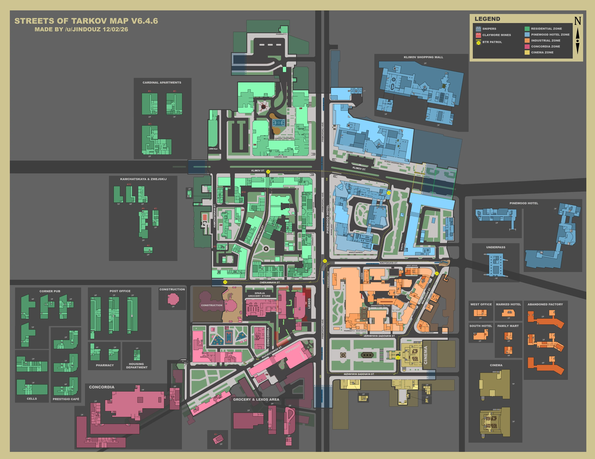

ТВОЙ СПРАВОЧНИК ПО ESCAPE FROM TARKOV
Всё для
Всё для
следующего рейда.
Найди нужный квест, изучи локацию и подготовь снаряжение. Карты, прохождения и твой прогресс — в одном месте.
—интерактивных карт
—задание в каталоге
—задание для Каппы

КАРТА ЛОКАЦИИ—
ИЗУЧИ МЕСТНОСТЬУлицы ТарковаКвестовые места · Выходы · Лут
ОТ ПЛАНА ДО ВЫХОДА
Подготовка к рейду
Выбери, с чего начать.
01
Задания
Торговцы, цепочки, цели и награды. Прохождения с картами и фотографиями.
Открыть журнал 02Карты локаций
Найди выход, квестовую точку, ключ или нужный контейнер на карте.
Изучить локации 03Предметы
Снаряжение, ключи и материалы. Связи с квестами и рецептами.
Открыть справочник 04Боеприпасы
Сравни урон и пробитие. Подбери патроны под свой калибр.
Выбрать патроны 05Боссы
Здоровье, особенности и места появления в выбранном режиме.
Изучить противника 06Убежище
Требования к постройкам, крафты и материалы для улучшений.
Подготовить материалыЗАДАНИЯ ПО ТОРГОВЦАМ
Все торговцы У кого берём работу?
 Прапор
Прапор Терапевт
Терапевт Скупщик
Скупщик Лыжник
Лыжник Миротворец
Миротворец Механик
Механик Барахольщик
Барахольщик Егерь
ЕгерьЛИЧНЫЙ ЖУРНАЛ
Открыть журнал Продолжи с того, где остановился.
Отмечай выполненные задания и возвращайся к своим целям.
Загружаем журнал…
ПЛАН НА МЕСТНОСТИ
Загрузка…Куда отправляемся?
Загружаем локации…
KORD BREACH
Открыть атлас Секретные документы
Загружаем сводку документов…